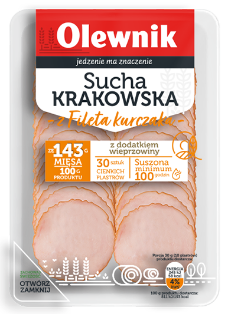
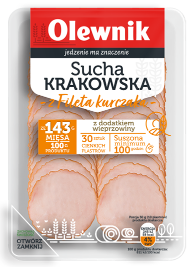

Poznaj nasze plastry
Przedstawiamy wyjątkową kolekcję wędlin paczkowanych marki Olewnik, stworzoną z myślą o Waszym komforcie.
W każdej hermetycznie zapakowanej tacce znajdziecie 30 cienkich, idealnie ukrojonych plasterków naszych popularnych kiełbas suchych: Krakowskiej oraz Żywieckiej. Nowa forma pakowania oznacza nie tylko wygodne porcje, po które możecie sięgnąć w dowolnym momencie, ale i długi termin przydatności do spożycia. Dzięki temu zawsze będziecie gotowi do przyrządzenia pysznej kanapki albo innej pożywnej przekąski, o każdej porze dnia i... nocy:)
Pobiesz broszuręKażdy detal ma znaczenie
Wszystko dopracowane do perfekcji. Każde ziarenko pieprzu, szczypta ziół, kryształek soli mają znaczenie.
Unikalna receptura, najlepsze składniki i wieloletnie doświadczenie – to nasz przepis na niepowtarzalny smak naszych kiełbas suchych. Do ich produkcji wybierane jest najwyższej jakości mięso wieprzowe z szynki oraz idealnie wyważona kompozycja naturalnych ziół i przypraw. Wszystko dopracowane do perfekcji. Wędzone pieczone, a następnie suszone przez wiele dni, nabiera wyjątkowego aromatu i kruchości. Czerpiąc z tradycji co najlepsze, produkowana jest bez użycia sztucznych barwników i glutaminianu sodu.


Krakowska sucha z szynki
100 g produktu wyprodukowano ze 143 g mięsa wieprzowego z szynki
- Suszona minimum 100 godzin.
- W opakowaniu 30 cienkich plasterków
- Widoczne kawałki chudej szynki na przekroju
- Bez dodatu barwników, glutaminianu monosodowego i fosforanów
- Bardzo krucha
Krakowska sucha z filetem z kurczaka
100 g produktu wyprodukowano ze 130 g mięsa z fileta z kurczaka i 13 g mięsa wieprzowego
- Suszona minimum 100 godzin.
- W opakowaniu 30 cienkich plasterków
- Widoczne kawałki fileta z kurczaka na przekroju
- Bez dodatu barwników, glutaminianu monosodowego i fosforanów
- Bardzo krucha
Kiełbasa krakowska pieczona sucha
100 g produktu wyprodukowano ze 143 g mięsa wieprzowego
- Suszona minimum 100 godzin.
- W opakowaniu 15 cienkich plasterków
- Widoczne kawałki chudej szynki na przekroju
- Bez dodatu barwników, glutaminianu monosodowego i fosforanów
- Bardzo krucha

Kiełbasa krakowska pieczona sucha
100 g produktu wyprodukowano ze 143 g mięsa wieprzowego
- Suszona minimum 100 godzin.
- W opakowaniu 15 cienkich plasterków
- Widoczne kawałki chudej szynki na przekroju
- Bez dodatu barwników, glutaminianu monosodowego i fosforanów
- Bardzo krucha
Kiełbasa żywiecka sucha z szynki
100 g produktu wyprodukowano ze 143 g mięsa wieprzowego z szynki
- Suszona minimum 100 godzin.
- W opakowaniu 30 cienkich plasterków
- Widoczne kawałki chudej szynki na przekroju
- Bez dodatu barwników, glutaminianu monosodowego i fosforanów
- Bardzo krucha
Mix krakowska
W skład miksu wchodzi kiełbasa krakowska sucha z szynki oraz kiełbasa krakowska sucha z filetem z kurczaka ułożone w oddzielnych rzędach
- Suszone minimum 100 godzin.
- W opakowaniu 30 cienkich plasterków
- Bez dodatu barwników, glutaminianu monosodowego i fosforanów
- Bardzo krucha


Co nas wyróżnia
Wysoka zawartość
białka
Bez dodatku
glutaminianu monosodowego
i fosforanów
Suszona minimu
100 godzin

Bez dodatku
barwników
30 ekstra cienkich
plasterków
Wysuszone
i bardzo kruche